The fun gaming computer, made by biobro 🎮
Steam · Minecraft · retro games · Ollie Pet · Coding Quest · World Explorer · and lots more
Free · Built on Arch Linux · Works on PCs, Intel Macs and the Steam Deck
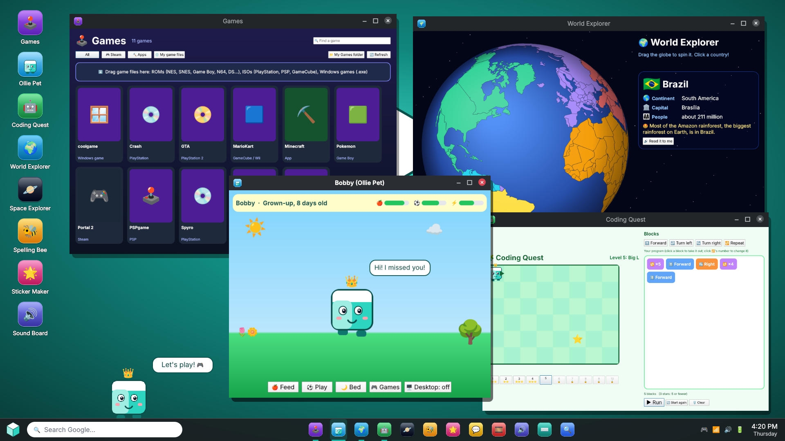
Every one has its own colourful icon, and Ollie talks to you in lots of them.
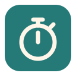
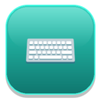
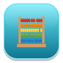
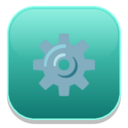
Real pictures of the Ollie OS apps.
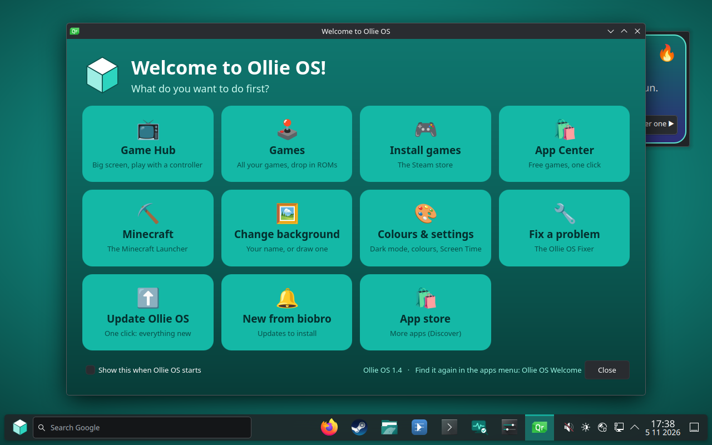
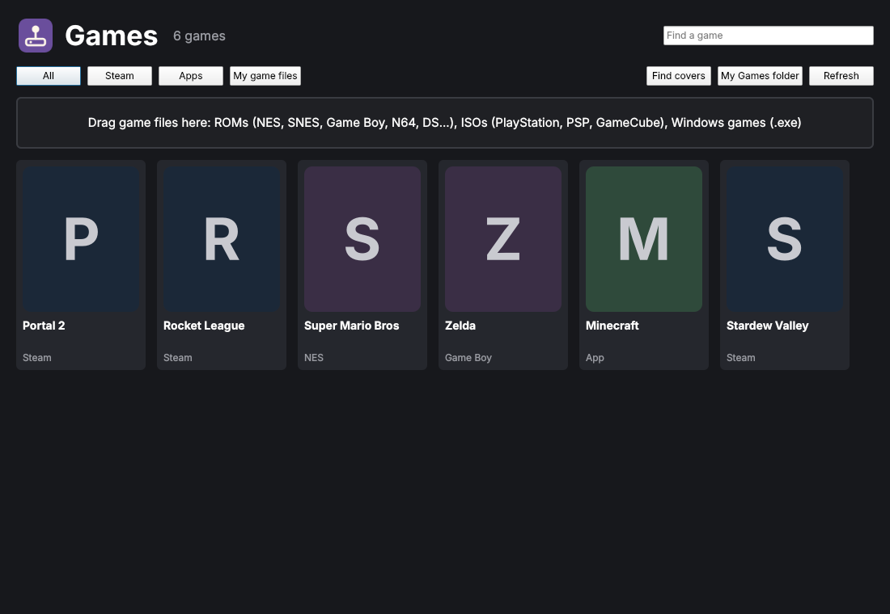
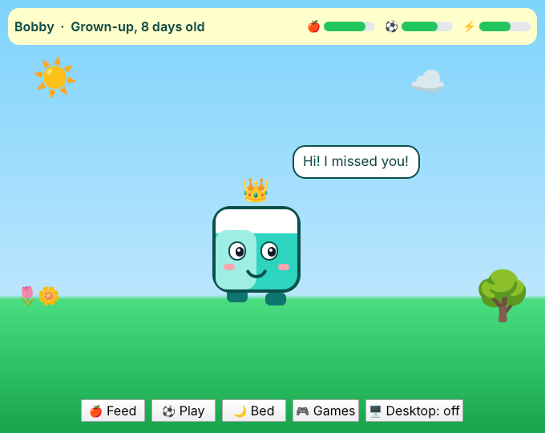
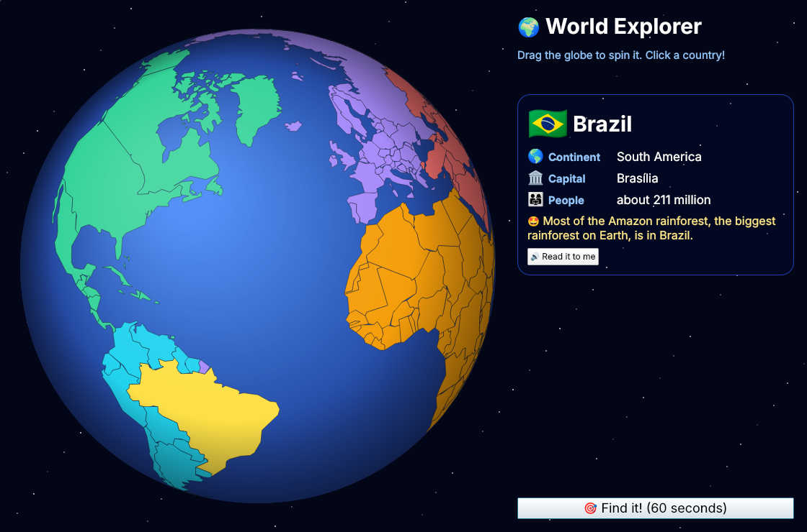
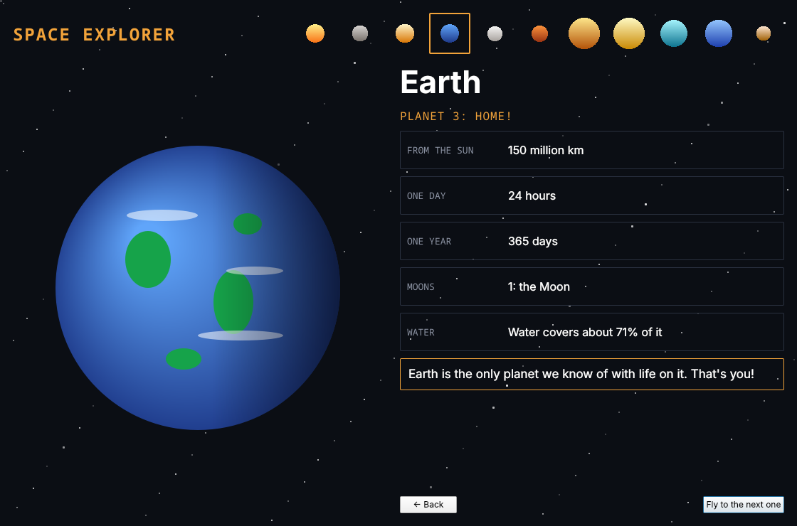
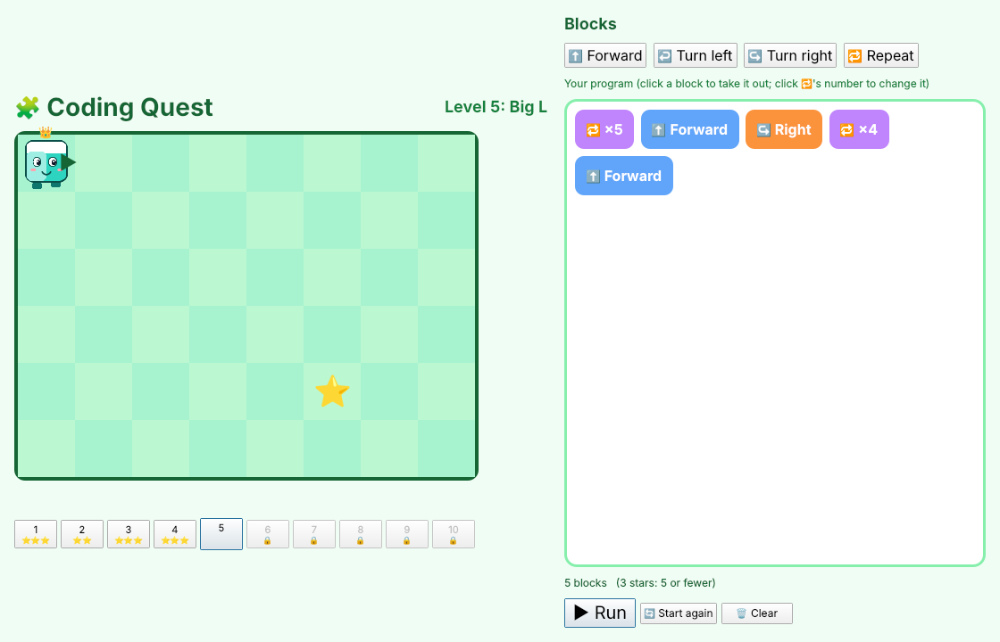
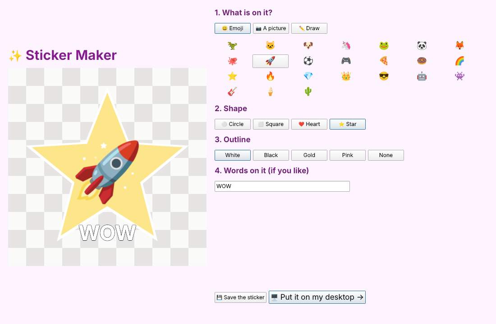
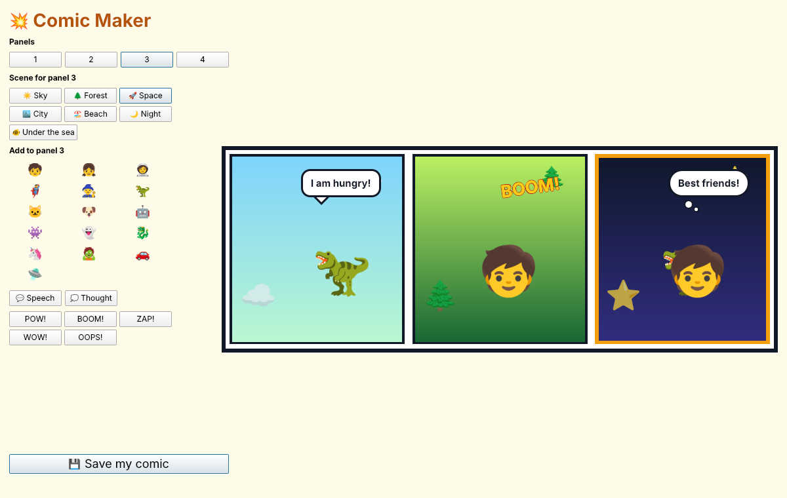
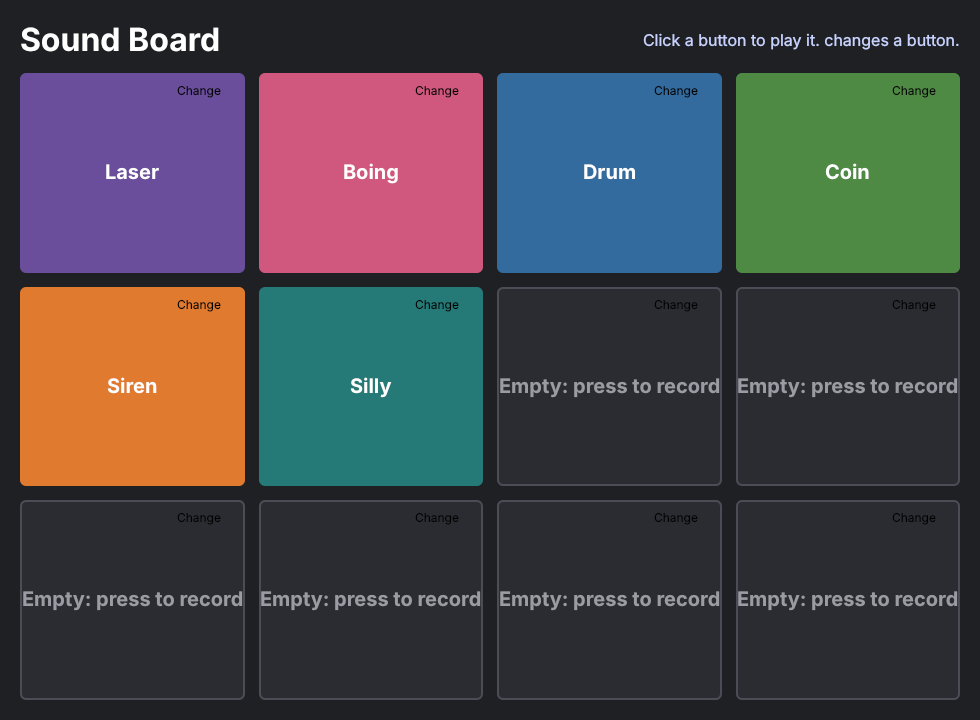
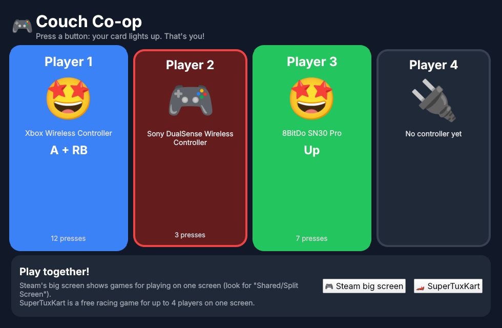
Made for gaming, and easy for everyone.
No account or sign-in needed.
For Windows, Mac, or Linux and the Steam Deck. It's in Download, below!
It downloads Arch Linux and turns it into Ollie OS. It takes 1 to 2 hours and about 20 GB of free space.
Then start the computer from it. Steam Deck: hold Volume Down. Dell: tap F12. Mac: hold Option.
Pick your computer: the download starts straight away, always the newest Ollie OS.
The whole ISO and more: the newest release · Every version: all releases · Made for 64-bit PCs with Intel or AMD chips, Intel Macs and the Steam Deck.
Click a question to see the answer.
Yes! Ollie OS is free, and so is Arch Linux, which it is built on.
Not unless you choose that. Trying it from a USB stick changes nothing on the computer. When you install it, it asks how: onto a drive, which erases that drive (it warns you if Windows is on it), or into a drive or folder keeping everything on it. If Windows is on another drive, Ollie OS can put it on the start-up menu so you pick each time.
64-bit PCs and laptops with Intel or AMD chips (new ones and older ones), Intel Macs, and the Steam Deck and Steam Machine. It doesn't work on phones, tablets, Chromebooks with ARM chips, or Macs with Apple chips (M1 and newer).
A USB stick of 32 GB or more, and to install it, a drive with at least 25 GB.
Yes: Steam and its games (with Proton for Windows games), Minecraft, retro games from ROMs and ISOs in the Games app, and Windows programs with Oliver.
It was made by one! Grown-ups can set Screen Time, the Typing Scanner and a Firefox password in Ollie OS Settings, locked with a parent PIN.
Switch on the Update Checker (the first start asks). When there's a new update you get a notification with an Install button. Update Ollie OS keeps everything else up to date in one click, and Recovery Mode can put a whole newer version on while keeping your files.